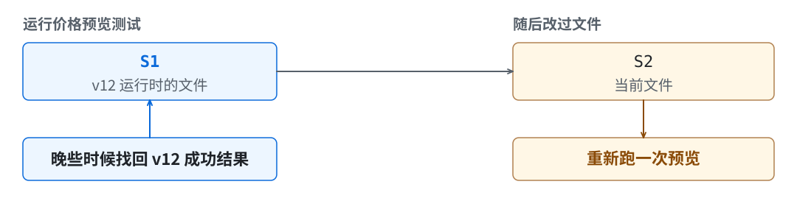

一次改错，怎样才值得存成下一次能用的经验
会员预览刚测通过，验证回包叫 v12。这时 pricing/preview.py 还是第一版。保存经验之前，有人把文件改成了第二版。现在写“这条测试已经验证当前预览”，这句话有哪一半站不住？
本章沿上一章的会员预览继续推演。用户还说过一句“以后预览和结算分开验”。一次测试只经历过一个版本，用户的约定却可以作为另一种材料留给下次。
一次回合，两种值得留下的材料
把验证时的文件叫 S1，后改的文件叫 S2。这只是两份文件内容的标记。v12 是那条验证回包对应的工具调用编号。想确认“要求是什么”，回去读用户那句话。想确认“某次检查覆盖了哪个版本”，就追这条调用。

v12 过了，至多能为当时的 S1 作证。现在重读文件只会看到 S2；想验证这一版，需要在第二版重新经过预览入口，拿到新的调用和回包。用户说的“分开验”可以保留，写清它适用的项目和动作。连在一句话里的约定与结果，到落盘时得各拿各的证据。
一句“通过”，沿哪条调用查回去？
开启受控学习后，程序在回合末挑材料。先找到本轮最后一条真正由用户发出的消息。程序追加的目录信息也可能标为 user，这里会用同一套识别器跳过它。由用户亲口说的“以后分开验”，才有资格成为用户约定的证据。
回包里同时写着 2 passed 和退出码 0，能拿它当验证材料吗？现有用例专门留了一条这样的回包，历史里却找不到发出它的调用。测试断言这轮材料不足以触发受控学习。查看缺失配对结果的验证用例（项目回归测试）
再看手头的 v12。先沿调用编号配回原命令，再核对它是不是程序识别的验证命令、是否成功退出。后台命令还要靠运行编号回到实际执行的那一趟。Read、Write 和 Edit 则提供当时用过的文件线索。这样才能把哪份文件、哪条命令和哪次结果交到下一步。查看配对筛选
程序把这些原记录编入一个短证据包，让分析模型提议标题、摘要、适用条件和动作。模型还要指出摘自哪条记录，比如 t4 关联刚才那次工具调用。程序逐条核对引用编号和连续原文，拒绝缺出处、超长或疑似含凭据的内容。用户原话只支持相应的用户纠正或项目约定。要写成已验证的技术做法，还需同时引用具体文件和相关验证。模型负责提议，写到哪一层、能不能覆盖旧条目，由代码裁定。查看引文和候选的核对
引用“修改生产配置里的会员折扣开关”，这串字确实能在“请记住，不能修改生产配置里的会员折扣开关”中找到。可把它整理成“应该修改开关”，意思已经反了。连续原文检查能拦错编号和编造摘录，审核动作时还得把前后文一起读出来。
要给 S2 盖章，就拿 S2 的结果
v12 的回包能证明检查通过，当时测的是哪份文件还要另找证据。程序在保存该工具批结果后收集此前已见过的项目内文件，计算内容哈希，给每个验证调用编号留一份小快照。它最多记录 16 个文件，单个文件最多读取 256 KiB。即使什么都没捕获到，也留下空快照。等用户改了文件才回来看旧历史，就不能用新读到的字节补写当时的记录。查看来源快照的时点和上限
筛选候选时，程序要求引用的验证发生在相关文件证据和已观察到的相关编辑之后，并检查当前文件是否还能和至少一份被引用的验证快照对上。所以改成 S2 之后，旧 v12 不能为这份候选作证。
初筛通过时文件可能还在 S1。稍后有人从外面把它改成了 S2，聊天里没有新的 Edit 记录，候选又已经准备发布。假如发布只看笔记的更新时间，刚整理出的“当前预览已验证”够新，就会被写进去。要查它说的是不是当前版本，得再读一遍文件，然后回到 v12 留下的快照。
source = memory.get("source")
if source != "user_stated":
if (not isinstance(source, str) or _relative_source(store.cwd, source) != source
or not record.get("source_hash") or await hashMemorySource(store.cwd, source) != record["source_hash"]
or not any(snapshot.get(source) == record["source_hash"]
for snapshot in record.get("validation_sources", {}).values())):
continue
elif record.get("source_hash") is not None:
continuecontrolled_learning.py · 第 424–432 行
候选的 source_hash 还指向 S1。从磁盘算出的版本标记是 S2，分支直接跳过这条候选。把 source_hash 偷换成 S2 也不会补出一份对应快照。「相关验证结束后记一版，发布前再读一版。」 这样才能查清今天的文件有没有经历过那次测试。开销是多读文件，碰到无法取版本的技术材料时，也会少积累一些。要存成 S2 已验证的经验，得先让它跑完专项检查，再用新的回包作证。
用户刚说“以后预览和结算分开验”，旧经验却还说“一条测试两边都够”。先用这次要求做事，再核对旧条目。发布时只写本项目自己的可写自动语义条目。同名的手写、锁定或只读兼容条目会阻止自动覆盖。
符合合并条件也不能直接写。比如程序准备更新时，拿到同名自动条目的第三版。等它取得写锁，另一份修改已经把第三版换成第四版。写入方会在锁内重新读取并核对刚才的快照，发现版本已变就放弃这次更新。这次比对保护的是从准备写入到实际写入之间的变化；来源文件能否作证则由前面的快照检查负责。查看比较已有记录后才发布
模型整理出了候选，文件已经变了吗？
命令行默认关闭受控学习。交互模式显式开启后，当前回合正常完成、并且找到可用证据才会安排分析。一趟启动最多 6 次，每次分析的提示与证据合计最多 12000 字符，输出上限 1024 token，关闭工具与重试。一次最多接纳两条，每条最多 1800 字符。这个额外模型请求也计入用量。反思请求失败或未取到用量时，会暂停这一启动中的后续自动学习，任务本身仍可继续。查看分析的请求边界 · 查看次数和停止条件
独立任务即使已经算出了结果，发布时也得确认它还属于这次有效的回合。比如分析跟着第 12 代回合启动，用户暂停后结果才到。程序会丢掉这次结果，代价是那笔已经发出的分析调用，保住的是用户暂停时原有的记忆。取消、退出和回合代号变化都会影响这个决定，写入前还会再检查一次。已有测试先发出暂停信号并让代号失效，再让分析返回，断言状态是 skipped，结果没有保存，写入列表也为空。查看暂停后收到结果的断言
分析成功返回时，状态先记作 ready。这表示候选已备好，记忆文件还没动。等准备实际写入，程序为同一分析编号保存 ReflectMemory 的执行意图，拿到确认后才执行；随后再记真实写入结果。
cached = await self.conversation.scoped_intent(
ref, "ReflectMemory", args, True, agent_run=RunRef("reflect", identity),
approval_ref="controlled-memory-learning-enabled" if self.controlled else "reflect-memory-enabled")
if cached is None:
# 修改任何记忆文件前，先取得执行意图的持久化确认。
applied = await self.apply(result)
await self.conversation.scoped_result(ref, json.dumps(applied, ensure_ascii=False))
else:
applied = json.loads(cached) if isinstance(cached, str) else cachedreflection_runtime.py · 第 101–109 行
scoped_intent 如果已交回这次操作的结果，程序就从收据还原 applied。看到 applied 时，可以沿收据查这次实际新增或更新了什么。要是只留下一份执行意图，写入结果无从确认，就按原操作的记录核实，不能因为模型随时能重做分析，就换个编号再写一遍。
这里能验的是候选怎样留下、受控写入怎样确认。要衡量学到了没有，还得换一组可比较的同类任务，数一数旧错重现几次，额外分析花了多少。结课篇再讲怎样读这种对照。
候选已准备好，手工记录先一步落盘
新版 S2 重新跑过了预览断言，候选的文件版本也对得上。模型整理候选时，用户手工存了一条同名经验，条件写成“只查会员预览”。此时进程还没登记 ReflectMemory 的写入意图。重开会话后读到 ready，该从哪两份记录查起？
核对判断
核对同名条目的实际归属与内容。验证过 S2 只能给候选作证，手写同名条目仍会拦住自动覆盖。再沿原分析编号查看写入意图和结果。ready 说明候选已保存，现场还缺真正写入的收据，不能据此称经验已经更新。
这一章带走什么
- 用户说“以后分开验”，这句话就能支持一条约定。要写“这个命令已经测到预览”，就去找当时的命令、配对回包和文件版本。
- 通过回包只替实际测过的版本作证。准备写经验时再读一遍它引用的文件，对话一字没变，也能发现磁盘上的预览代码已经换版。
- 经验有没有写进去，沿原编号找写入收据。收据对得上，就沿用原结果。只找到写入意图，先核实原来那次写入。
面经自测
怎样从聊天记录中提取值得长期保存的信息？
未具名半导体公司 · AI 相关岗位 · 面经原帖 · 题意转述
展开参考回答
我先分清谁提出了这个要求、哪条记录能证明这个做法。能在以后复用，又能说清适用条件的内容，才值得写进长期记忆。
若存可以引用用户说的“预览和结算分开验”。若还想记“这个命令已经测到预览”，就得配上当时的命令、结果和文件版本。
长期记忆和用户刚说的新要求冲突时，怎么避免旧记忆盖过新要求？
科大讯飞 · 一面 · 面经原帖 · 题意转述 可回看 第 2 章 第 16 章
展开参考回答
先按用户这次明确说的要求做，然后核对旧记录的适用条件和版本。手工写的或已锁定的记录，要保留其归属，不能顺手覆盖。
摘要把“不能修改生产配置”写成了“修改生产配置”，还进了长期记忆。怎么发现，又怎样预防？
蚂蚁集团 · 技术面 · 面经原帖 · 题意转述 可回看 第 13 章 第 14 章 第 16 章
展开参考回答
我会带着引文回到用户整句话。建议让人改生产配置，原话里却有个“不能”，先停用这条建议，核对哪些操作受到影响。
预防时既要让每条建议附上能查回的原句，也要核对建议和整句的意思。程序能检查摘录确实出现在合格来源里，可一句话截掉“不”之后，剩下的字照样可能逐字对得上。
测试通过后文件又改了一次，这条成功经验应当绑定哪一版？
若存设计题
展开参考回答
一条消息标着 user，为什么若存还要查它是不是用户亲口说的？
若存设计题
展开参考回答
模型在整理经验的这段时间，有人手改了同名条目，自动更新怎么办？
若存设计题
展开参考回答
为什么若存有了自动学习，也不让每次分析无限追问和调用工具？
若存设计题